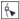

Быстрые ссылки на процедуры, описанные на этой странице:
• |
С помощью функции обрезки можно обрезать ненужные области растрового изображения. Чтобы в результате обрезки получилось прямоугольное растровое изображение, используйте инструмент Обрезка. Для получения дополнительных сведений см. раздел Обрезка объектов. Чтобы обрезать растровое изображение и образовать нестандартную форму, используйте инструмент Фигура и команду Обрезка изображения.
| Обрезка растрового изображения |
1. |
В наборе инструментов выберите инструмент Фигура .
|
2. |
Выделите растровое изображение.
|
3. |
Для изменения формы растрового изображения перетащите угловые
узлы.
|
Если требуется добавить узел, то, выбрав инструмент Фигура, дважды щелкните на границе узлов (на пунктирной линии) в том месте, где необходимо разместить узел. |
4. |
Выберите пункт Растровые изображения |
Чтобы в результате обрезки быстро получить растровое изображение
прямоугольной формы, используйте инструмент Обрезка . Для
получения сведений об инструменте Обрезка см. раздел Обрезка
объектов.
|
Чтобы выделенное растровое изображение обрезать после
перетаскивания угловых узлов, выберите инструмент Указатель |
Copyright 2012 Corel Corporation. Все права защищены.